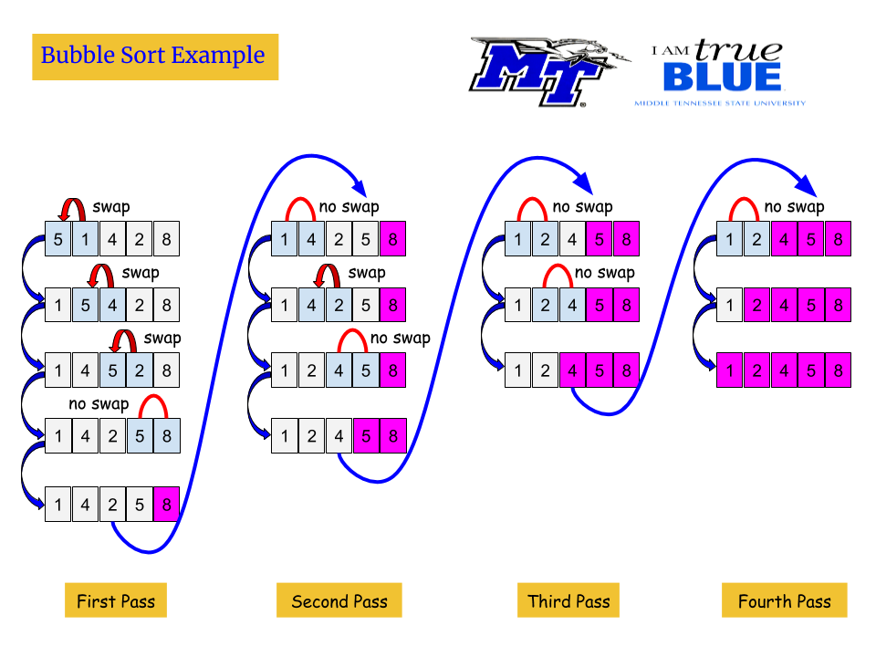

Sorting Algorithms
Many programming tasks require the data in an array be sorted in some order. To sort the data in an array, the programmer must use an appropriate sorting algorithm. A
sorting algorithm is a technique for stepping through an array and rearranging ints contents in some order.
Bubble Sort
The bubble sort is an easy way to arrange data in ascending or descending order.
void bubbleSort (int array[], int aSize)
{
// Look through all items, starting at the front.
for (int i = 0; i < aSize-1; i++)
{
for(int j = 0; j < aSize-1-i; j++)
if (array[j] < array[j+1])
swap(array[j], array[j+1]);
}
}
bubbleSort.cpp
Example
We have a list of integer values:
int list[5] = {5,1,4,2,8};
Suppose we wish to sort this one-dimensional array in ascending order:
bubbleSort(list,5);
The figure below, shows how bubble sort works:
